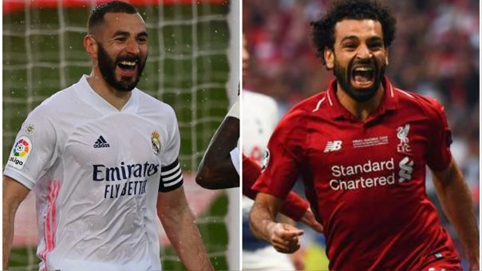
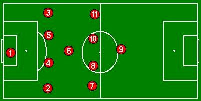

Real Madrid y Liverpool protagonizan un duelo de gigantes en los cuartos de final de la Champions League, el que enfrenta a los ganadores de 19 Copas de Europa con una revancha pendiente, la de la final de Kiev que cerró un ciclo blanco de leyenda con Zinedine Zidane, que busca devolver a su equipo a lo más alto.
Es el reto más difícil de Zidane. Volver a situar al Real Madrid en ligar de privilegio con un equipo carente de grandes referentes ofensivos desde que se marchó Cristiano Ronaldo tras el último precedente ante el Liverpool.
Aquella final repleta de vértigo de la Liga de Campeones 2017/18, convirtió al conjunto madridista en el único equipo en ganar tres ediciones consecutivas desde el cambio de formato. Frenó un año la llegada a la cima del Liverpool de Jürgen Klopp, que meses después acabaría logrando su sexto entorchado.
El partido de vuelta entre Real Madrid y Liverpool por los cuartos de final de Champions League
está programado para este miercoles 14 de abril a partir de las 15 horas.
Transmite ESPN y vía web por ESPN Play
 Real Madrid: Courtois; Varane, Nacho, Militao; Lucas Vázquez, Casemiro, Modric, Kroos, Mendy; Marco Asensio y Benzema.
Liverpool: Alisson; Robertson, Kabak, Phillips, Alexander-Arnold; Thiago, Wijnaldum, Fabinho; Salah, Jota o Firmino y Mané.
Árbitro: Felix Brych (GER). Estadio: Alfredo di Stéfano.